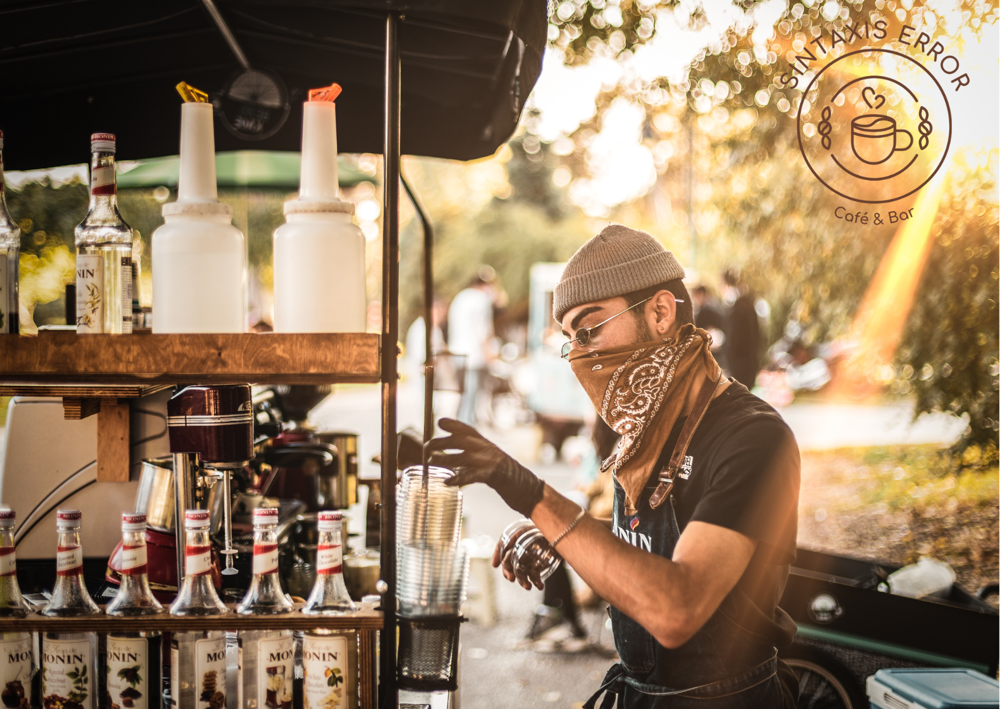

Conoce Los Mejores Licores Con Café Para Sorprender
De Sintaxis Error Coffe / 18th Oct, 2022
Corajito, el primer licor mexicano de este tipo es ideal para disfrutar en cualquier época del año. Esta marca basada en el comercio justo produce licor con café orgánico 100% mexicano de variedad Typica originario de Los Altos de Chiapas.Al ser orgánico, este café pasa por todo el proceso habitual de recolección, fermentación, secado, trillado, tostado y molido antes de ser preparado con la técnica cold brew o infusión en frío. Posteriormente, es mezclado con hierbas y especias como romero, estragón, anís, canela y vainilla, azúcar de caña y alcohol de grano de la más alta calidad.
Uno de los licores de café más populares es el Kahlua, reconocido por su sus letras de estilo polinesio y su gran botella marrón esta bebida con alcohol tiene un sabor dulce y almibarado, lo que lo convierte en el típico licor de café. Por ello, resulta ideal para preparar cócteles. Si eres amante del café negro, Firelit es el licor con café ideal para los días fríos. Esta bebida es elaborada para servirse sola, aunque también puede utilizarse para preparar cócteles. Sin embargo, es importante tomar en cuenta que tiene un alto contenido de cafeína, por lo que despierta todos los sentidos.